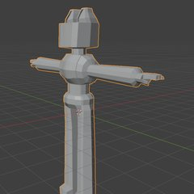

Blender: модифікатори і референси
Unity 3D · урок 6 «Модифікатори у Blender. Додавання референсів» · Blender 5.2
1Модифікатори
Модифікатор — автоматична дія, яка змінює вигляд об'єкта, не чіпаючи його геометрію. Його можна вимкнути, прибрати або поміняти місцями з іншими — модель від цього не зламається.
| Де / що | Що робить |
|---|---|
| Гайковий ключ у правій панелі → Add Modifier | додати модифікатор (Generate → Subdivision Surface, Bevel, Screw, Skin, Mirror…; Deform → Simple Deform) |
| Порядок у списку (стек) | модифікатори працюють згори вниз; поміняй порядок — зміниться результат |
| Іконка монітора | тимчасово вимкнути модифікатор |
| × | прибрати модифікатор |
| ˅ → Apply (лише в Object Mode, Tab) | застосувати: зміни стають справжньою геометрією, яку можна редагувати |
2Симетрія: Mirror
Робимо лише половину моделі — друга половина повторює все сама.
3Референси і кіт-робот
Референс — картинка, по якій моделюємо. Ставимо дві: спереду і збоку, робимо напівпрозорими й підганяємо кожне кільце моделі під контур.

Увесь кіт — одне відео (52 кроки). Список кроків під відео — щоб перейти одразу до потрібного.
| Прийом | Як |
|---|---|
| Кільце під референс | Alt+ЛКМ по кільцю → S (або S X / S Y) → G — до контуру на картинці |
| Кругле пласке кільце | грані → I → ПКМ → LoopTools → Circle, потім Flatten (додаток LoopTools: Edit → Preferences → Get Extensions) |
| Кілька граней в одну | X → Dissolve Faces |
| Пласка сторона | грані → S Z 0 |
| Пальці окремо | Alt+E → Extrude Individual Faces |
| Розрізи | Ctrl+R — петля; K — ніж (ЛКМ по точках, Enter) |
robocat.blend.Для вчителя: файли для презентації
Кожен крок окремим відео — video/<вправа>-NN.mp4 (у Google Slides їх можна зупиняти): завантаж на Диск → Вставити → Відео → Google Диск.
Усі вправи підряд: lesson06-all.mp4. Цілі вправи: mods · mirror · robocat_p.
Кіт відтворює оригінал курсу Gatzer.blend людськими кроками (точність ≈ 77 % за tools/score.py, без самоперетинів і зайвих ліній — tools/mesh_check.py); готова модель — blender/models/lesson06/robocat_p.blend. Джерела: blender/lesson06/robo_p.py, журнал EXPERIMENTS.md.